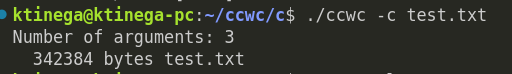
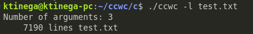
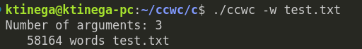
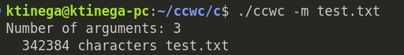
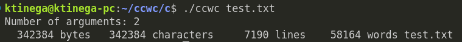

Overview
This project is a command-line utility for counting characters, words, lines, and bytes in a text file.
Features
- Counts bytes, characters, words, and lines.
- Supports multiple input files.
- Customizable command-line options.
Usage
To use the utility, run the following command:
./ccwc [OPTION] [FILE]Replace [OPTION] with:
-cto count bytes-lto count lines-wto count words-mto count characters
Command Examples
Here are examples of running the commands:
Counting Bytes
Counting Lines
Counting Words
Counting Characters
Counting All
Get It On GitHub
Check out the repository for more details and the source code:
GitHub Repository